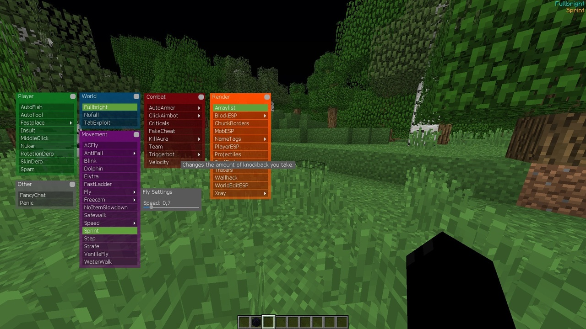
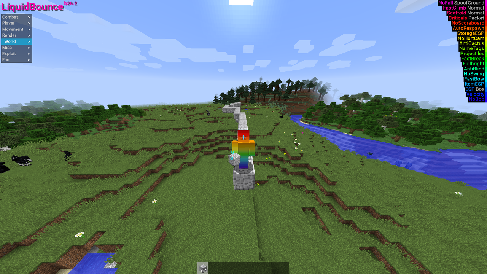
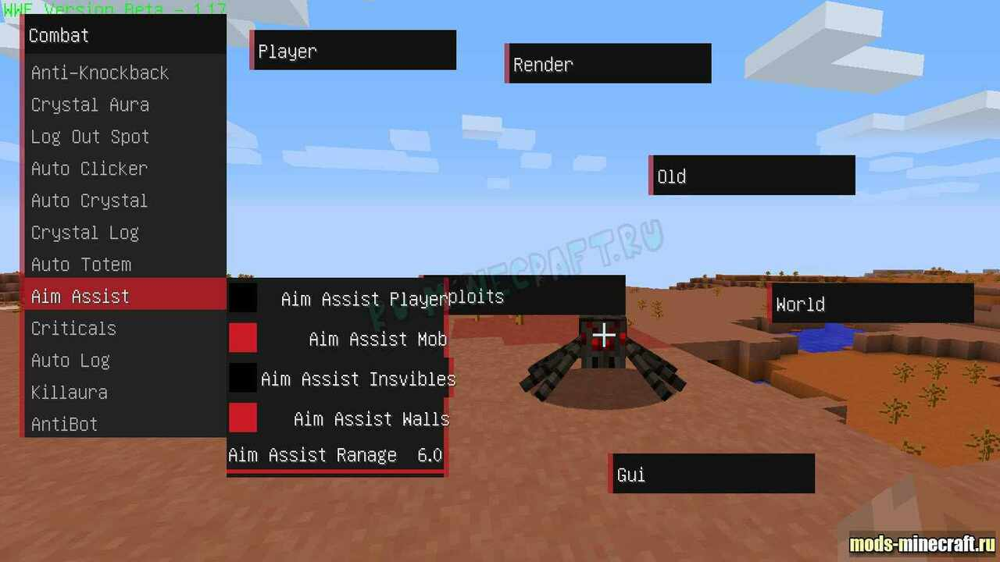

Matix

Matix - чит-клиент для майнкрафта, содержащий в себе порядка 35 читерских функций. Это далеко не лучший чит, но для начинающего читера пойдёт.
Установка:
1. Скачать и распаковать архив.
2. Перенести папку с читом в папку versions.
Открытие меню на правый Shift.
LiquidBounce

Мод LiquidBounce - это большой чит мод который добавляет в майнкрафт более 130 разных чит возможностей которые позволят получить полезные или нечестные функции в игре.
Установка:
1. Скачать и распаковать архив.
2. Скачать и перекинуть мод в папку mods.
Открытие меню на правый Shift.
WWE

Чит WWE — это чит-клиент для игроков, которые ценят качество у читов. Данный чит отличается от других своим мощным аимом. Благодарю ему вы сможете отличиться от других игроков своей профессиональной игрой.
Установка:
1. Скачать и распаковать архив.
2. Перенести папку с читом в папку versions.
Открытие меню на правый Shift.